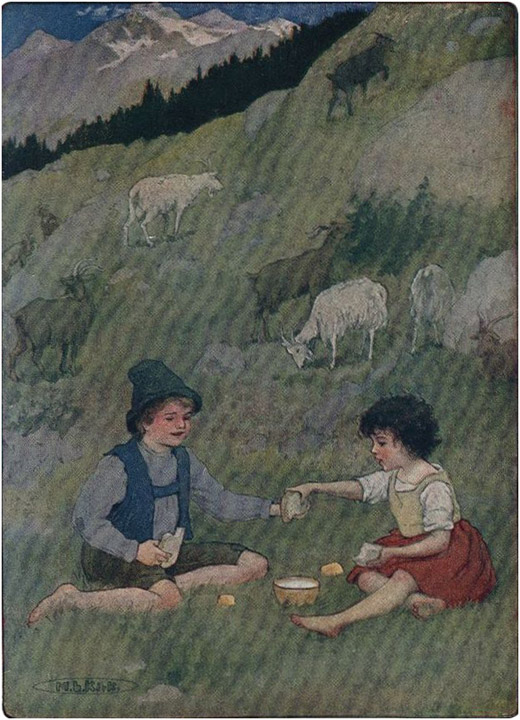

Heidi terbangun pagi-pagi sekali keesokan harinya oleh suara siulan yang keras. Membuka matanya, ia melihat tempat tidurnya yang kecil dan jerami di sampingnya bermandikan sinar matahari keemasan. Untuk sesaat ia tidak tahu di mana ia berada, tetapi ketika ia mendengar suara berat kakeknya di luar, ia mengingat semuanya. Ia ingat bagaimana ia mendaki gunung sehari sebelumnya dan meninggalkan Ursula tua, yang selalu menggigil kedinginan dan duduk di dekat kompor sepanjang hari. Selama Heidi tinggal bersama Ursula, ia selalu wajib tinggal di dalam rumah, di mana wanita tua itu dapat melihatnya. Karena tuli, Ursula takut membiarkan Heidi pergi ke luar, dan anak itu sering gelisah di ruangan yang sempit dan ingin sekali berlari ke luar. Karena itu, ia sangat senang menemukan dirinya di rumah barunya dan hampir tidak sabar untuk melihat kambing-kambing itu lagi. Melompat dari tempat tidur, ia mengenakan beberapa barangnya dan dalam waktu singkat turun tangga dan berlari ke luar. Peter sudah berada di sana bersama kawanan kambingnya, menunggu Schwänli dan Bärli , yang baru saja dibawa oleh kakek mereka untuk bergabung dengan kambing-kambing lainnya.
"Apakah kamu ingin pergi bersamanya ke padang rumput?" tanya kakek.
"Ya," seru Heidi sambil bertepuk tangan.
"Pergilah sekarang, dan mandilah dulu, karena matahari akan menertawakanmu jika melihat betapa kotornya dirimu. Semuanya sudah siap di sana untukmu," tambahnya, sambil menunjuk ke sebuah bak besar berisi air yang berada di bawah sinar matahari. Heidi melakukan apa yang diperintahkan, dan mandi serta menggosok dirinya hingga pipinya memerah. Sementara itu, kakek memanggil Peter untuk masuk ke gubuk dan membawa tasnya. Bocah itu mengikuti lelaki tua itu, yang memerintahkannya untuk membuka tas tempat ia membawa makan malamnya yang sedikit. Kakek memasukkan sepotong roti dan sepotong keju ke dalam tas, yang ukurannya dua kali lebih besar daripada yang dibawa bocah itu sendiri.
"Mangkuk kecilnya juga ikut dimasukkan," kata Paman , "karena anak itu belum tahu cara minum langsung dari kambing, seperti yang kamu lakukan. Dia akan tinggal bersamamu seharian, jadi siapkan dua mangkuk penuh susu untuk makan malamnya. Awas jangan sampai dia jatuh dari bebatuan! Apa kamu dengar?"
Tepat saat itu Heidi berlari masuk. "Kakek, apakah matahari masih bisa menertawakanku?" tanyanya. Anak itu menggosok-gosok tubuhnya dengan handuk kasar yang diletakkan kakek di samping bak mandi dengan sangat keras sehingga wajah, leher, dan lengannya merah seperti lobster. Sambil tersenyum, kakek berkata: "Tidak, dia tidak bisa menertawakanku lagi sekarang; tetapi ketika kamu pulang malam ini, kamu harus masuk ke bak mandi seperti ikan. Jika kita berkeliaran seperti kambing, kaki kita akan kotor. Pergi sana!"
Mereka dengan riang memulai pendakian ke puncak Alpen. Langit biru tua yang cerah tampak di atas mereka, karena angin telah mengusir setiap awan kecil di malam hari. Lereng gunung yang hijau segar bermandikan sinar matahari yang cemerlang, dan banyak bunga biru dan kuning telah mekar. Heidi sangat gembira dan berlari ke sana kemari. Di satu tempat ia melihat hamparan besar bunga primrose merah yang indah, di tempat lain bunga gentian biru berkilauan di rerumputan, dan di mana-mana bunga rock-rose emas mengangguk-angguk padanya. Dalam kegembiraannya menemukan harta karun seperti itu, Heidi bahkan melupakan Peter dan kambing-kambingnya. Ia berlari jauh di depan Peter dan kemudian menyimpang ke satu sisi, karena bunga-bunga berkilauan itu menggodanya di sana-sini. Memetik seikat penuh bunga untuk dibawa pulang, ia memasukkan semuanya ke dalam celemek kecilnya.
Peter, yang matanya yang bulat hanya bisa bergerak perlahan, kesulitan mengawasi istrinya. Kambing-kambing itu bahkan lebih buruk, dan hanya dengan berteriak dan bersiul, terutama dengan mengayunkan tongkatnya, dia bisa menggiring mereka bersama-sama.
"Heidi, kau di mana sekarang?" panggilnya dengan nada marah.
"Di sini," terdengar suara dari suatu tempat. Peter tidak dapat melihatnya, karena dia duduk di tanah di belakang gundukan kecil yang ditutupi bunga-bunga harum. Seluruh udara dipenuhi dengan aroma bunga-bunga itu, dan anak itu menghirupnya dalam-dalam.
"Ikuti aku sekarang!" seru Peter. "Kakek menyuruhku untuk mengawasimu, dan kamu jangan sampai jatuh dari bebatuan."
"Di mana mereka?" tanya Heidi tanpa bergerak sedikit pun.
"Jauh di atas sana, dan kita masih harus menempuh perjalanan yang jauh. Jika kau datang dengan cepat, kita mungkin bisa melihat elang di sana dan mendengar jeritannya."
Hal itu menggoda Heidi, dan dia berlari menghampiri Peter, dengan celemeknya yang penuh bunga.
"Sekarang kamu sudah punya cukup," katanya. "Jika kamu memetik semuanya hari ini, besok tidak akan ada yang tersisa." Heidi mengakui itu, lagipula celemeknya sudah penuh. Mulai sekarang dia tetap berada di sisi Peter. Kambing-kambing itu, mencium aroma rempah-rempah yang tajam, juga bergegas tanpa menunda-nunda.
Peter biasanya bermalam di kaki tebing tinggi yang tampak menjulang jauh ke langit. Bebatuan yang menggantung di satu sisi membuatnya berbahaya, sehingga kakeknya bijak untuk memperingatkan Peter.
Setelah sampai di tujuan, anak laki-laki itu melepas tasnya dan meletakkannya di sebuah lubang kecil di tanah. Angin sering bertiup kencang di sana, dan Peter tidak ingin kehilangan barang berharganya. Kemudian dia berbaring di rumput yang terkena sinar matahari, karena dia sangat lelah.
Heidi, melepas celemeknya, menggulungnya rapat-rapat dan meletakkannya di samping tas Peter. Kemudian, duduk di samping anak laki-laki itu, dia melihat sekelilingnya. Jauh di bawah dia melihat lembah yang berkilauan; hamparan salju yang luas menjulang tinggi di depannya. Heidi duduk lama tanpa bergerak, dengan Peter tertidur di sisinya dan kambing-kambing berkeliaran di antara semak-semak. Angin sepoi-sepoi menerpa pipinya dan pegunungan besar di sekitarnya membuatnya merasa bahagia seperti belum pernah sebelumnya. Dia memandang puncak-puncak gunung hingga semuanya tampak memiliki wajah, dan segera mereka menjadi akrab baginya, seperti teman-teman lama. Tiba-tiba dia mendengar jeritan keras dan tajam, dan mendongak dia melihat burung terbesar yang pernah dilihatnya, terbang di atasnya. Dengan sayap terbentang, burung itu terbang berputar-putar di atas kepala Heidi.
"Bangun, Peter!" panggil Heidi. "Lihat ke atas, Peter, dan lihat elang di sana!"
Peter melihat dari kejauhan, lalu mereka berdua menatap burung itu dengan napas tertahan. Burung itu terbang semakin tinggi ke angkasa biru, hingga akhirnya menghilang di balik puncak gunung.
"Ke mana perginya?" tanya Heidi.
"Pulang ke sarangnya," jawab Peter.
"Oh, benarkah ia tinggal di atas sana? Pasti menakjubkan! Tapi katakan padaku mengapa ia berteriak begitu keras?" tanya Heidi.
"Karena memang harus begitu," jawab Peter.
"Oh, ayo kita panjat ke sana dan lihat sarangnya!" pinta Heidi, tetapi Peter, dengan nada tidak setuju, menjawab: "Oh sayang, oh sayang, bahkan kambing pun tidak bisa memanjat ke sana! Kakek sudah bilang jangan biarkan kamu jatuh dari bebatuan, jadi kita tidak bisa pergi!"
Peter mulai memanggil dengan keras dan bersiul, dan tak lama kemudian semua kambing berkumpul di lapangan hijau. Heidi berlari ke tengah-tengah mereka, karena dia senang melihat mereka melompat dan bermain-main.
Sementara itu, Peter sedang menyiapkan makan malam untuk Heidi dan dirinya sendiri, dengan menaruh potongan besar Heidi di satu sisi dan potongan kecil miliknya di sisi lain. Kemudian dia memerah susu Bärli dan meletakkan mangkuk penuh di tengah. Setelah siap, dia memanggil gadis kecil itu. Tetapi butuh beberapa waktu sebelum gadis itu menuruti panggilannya.

DIA JUGA MEMBERIKAN SELURUH POTONGAN KEJU ITU KEPADANYA ToList
"Berhentilah melompat-lompat," kata Peter, "dan duduklah; makan malammu sudah siap."
"Apakah susu ini untukku?" tanyanya.
" Ya, benar ; potongan-potongan besar itu juga milikmu. Setelah kamu habis minum susu, aku akan mengambilkanmu lagi. Setelah itu aku akan mengambil bagianku."
"Kamu pakai susu apa?" tanya Heidi.
"Aku mendapatkannya dari kambingku sendiri, yang berbintik-bintik di sana. Tapi silakan makan!" perintah Peter lagi. Heidi menurut, dan ketika mangkuk itu kosong, dia mengisinya lagi. Sambil mematahkan sepotong roti untuk dirinya sendiri, dia memberikan sisanya kepada Peter, yang masih lebih besar dari porsi Peter sebelumnya. Dia juga memberikan sepotong keju utuh kepada Peter, sambil berkata: "Kamu bisa makan itu, aku sudah cukup makan!"
Peter terdiam karena terkejut, karena mustahil baginya untuk melepaskan bagiannya. Karena tidak menganggap serius Heidi, ia ragu-ragu sampai Heidi meletakkan barang-barang itu di pangkuannya. Kemudian ia menyadari bahwa Heidi benar-benar serius, dan ia mengambil bagiannya. Sambil mengangguk sebagai tanda terima kasih, ia menikmati hidangan paling mewah yang pernah ia makan sepanjang hidupnya. Sementara itu, Heidi mengawasi kambing-kambing itu dan menanyakan nama-nama kambing tersebut kepada Peter.
Bocah itu bisa menceritakan semuanya kepada Heidi, karena nama-nama mereka adalah satu-satunya hal yang dia ingat. Heidi pun segera mengenal mereka, karena dia telah mendengarkan dengan saksama. Salah satunya adalah Si Turki Besar, yang mencoba menusukkan tanduk besarnya ke semua kambing lainnya. Sebagian besar kambing lari menjauh dari teman mereka yang kasar. Hanya Si Burung Pipit Thistle yang berani yang tidak takut, dan dengan menusukkan tanduknya tiga atau empat kali ke kambing lainnya, membuat Si Turki terkejut dengan keberaniannya yang luar biasa sehingga ia berdiri diam dan menyerah berkelahi, karena Si Burung Pipit Thistle memiliki tanduk yang tajam dan menghadapinya dengan sikap yang sangat agresif. Seekor kambing kecil berwarna putih, yang disebut Belalang Salju , terus mengembik dengan cara yang paling menyedihkan, yang membuat Heidi menghiburnya beberapa kali. Akhirnya Heidi kembali menghampiri kambing kecil itu, dan memeluk kepalanya, dia bertanya, "Ada apa denganmu, Belalang Salju ? Mengapa kau selalu menangis minta tolong?" Kambing kecil itu mendekat ke sisi Heidi dan menjadi sangat tenang. Peter masih makan, tetapi di sela-sela tegukan, dia memanggil Heidi: "Dia sangat sedih, karena si tua bangka itu telah meninggalkan kita. Dia dijual kepada seseorang di Mayenfeld dua hari yang lalu."
"Siapakah si kambing tua itu?"
"Ibunya, tentu saja."
"Di mana neneknya?"
"Dia tidak punya satu pun."
"Dan kakeknya?"
"Dia juga tidak punya."
Snowhopper kecil !" kata Heidi, sambil menarik makhluk kecil itu dengan lembut ke arahnya. "Jangan bersedih lagi ; lihat, aku akan datang bersamamu setiap hari sekarang, dan jika ada sesuatu yang terjadi, kamu bisa datang kepadaku."
Snowhopper menggosokkan kepalanya ke bahu Heidi dan berhenti mengembik. Ketika Peter akhirnya selesai makan malam, dia bergabung dengan Heidi.
Gadis kecil itu baru saja mengamati bahwa Schwänli dan Bärli adalah kambing yang paling bersih dan cantik. Mereka menghindari orang Turki yang mengganggu itu dengan semacam sikap meremehkan dan selalu berhasil menemukan semak-semak paling hijau untuk diri mereka sendiri. Dia menceritakannya kepada Peter, yang menjawab: "Aku tahu! Tentu saja mereka yang paling cantik, karena paman memandikan mereka dan memberi mereka garam. Dia memiliki kandang terbaik."
Tiba-tiba Peter, yang tadi berbaring di tanah, melompat dan berlari mengejar kambing-kambing itu. Heidi, yang tahu pasti ada sesuatu yang terjadi, mengikutinya. Ia melihat Peter berlari menuju jurang berbahaya di sisi jalan. Peter memperhatikan bagaimana burung pipit Thistlefinch yang gegabah itu semakin mendekat ke tempat berbahaya tersebut. Peter datang tepat waktu untuk mencegah kambing itu jatuh ke jurang. Sayangnya, Peter tersandung batu karena terburu-buru dan hanya mampu menangkap kambing itu dengan satu kaki. Burung pipit Thistlefinch , yang marah karena mendapati dirinya terhenti dalam perjalanannya yang menyenangkan, mengembik dengan ganas. Karena tidak bisa bangun, Peter berteriak meminta bantuan. Heidi segera melihat bahwa Peter hampir menarik kaki hewan itu hingga putus. Ia dengan cepat memetik beberapa tumbuhan herbal yang harum dan menaruhnya di bawah hidung hewan itu, lalu berkata dengan lembut: "Ayo, ayo, burung pipit Thistlefinch , dan bersikaplah bijaksana. Kau bisa jatuh ke sana dan patah kakimu. Itu akan sangat menyakitkan."
Kambing itu berbalik dan melahap rempah-rempah yang dipegang Heidi. Ketika Peter berdiri, ia menuntun kembali kambing yang kabur itu dengan bantuan Heidi. Setelah kambing itu aman, ia mengangkat tongkatnya untuk memukulinya sebagai hukuman. Kambing itu mundur dengan malu-malu, karena ia tahu apa yang akan terjadi. Heidi berteriak keras: "Peter, jangan pukul dia! Lihat betapa takutnya dia."
"Dia memang pantas mendapatkannya," geram Peter, siap menyerang. Tetapi Heidi, meraih lengannya, berteriak dengan penuh amarah: "Kau tidak boleh menyakitinya! Lepaskan dia!"
Mata Heidi berbinar-binar, dan ketika melihatnya dengan tatapan berwibawa, ia mengurungkan niatnya dan menjatuhkan talinya. "Aku akan melepaskannya, jika kau memberiku sepotong keju lagi besok," katanya, karena ia menginginkan kompensasi atas ketakutannya.
"Kamu boleh mengambil semuanya besok dan setiap hari, karena aku tidak membutuhkannya," Heidi meyakinkannya. "Aku juga akan memberimu sepotong besar roti, jika kamu berjanji tidak akan pernah memukuli kambing-kambing itu."
"Aku tidak peduli," geram Peter, dan dengan cara itu dia memberikan janjinya.
Demikianlah hari telah berlalu, dan matahari sudah mulai terbenam di balik pegunungan. Duduk di rerumputan, Heidi memandang bunga lonceng biru dan mawar liar yang bersinar dalam sinar matahari terakhir. Puncak-puncak gunung juga mulai bercahaya, dan Heidi tiba-tiba memanggil anak laki-laki itu: "Oh, Peter, lihat! semuanya terbakar. Gunung-gunung terbakar dan langit juga. Oh, lihat! bulan di sana juga terbakar. Apakah kamu melihat semua gunung bercahaya? Oh, betapa indahnya salju itu! Peter, sarang elang pasti juga terbakar. Oh, lihat pohon-pohon cemara di sana!"
Peter dengan tenang mengupas kulit joran pancingnya, dan sambil mendongak, berkata kepada Heidi: "Ini bukan api; memang selalu terlihat seperti itu."
"Tapi sebenarnya apa itu?" tanya Heidi dengan penuh antusias, sambil melihat ke sekelilingnya.
"Memang jadi seperti itu dengan sendirinya," jelas Peter.
"Oh lihat! Semuanya tampak indah sekarang! Oh, lihat gunung di sana dengan salju dan puncak-puncak yang tajam. Apa namanya?"
"Gunung tidak punya nama," jawabnya.
"Oh, lihat, betapa indahnya! Kelihatannya seperti banyak sekali mawar tumbuh di tebing-tebing itu. Oh, sekarang mawar-mawar itu mulai beruban. Aduh! Api sudah padam dan semuanya sudah berakhir. Sungguh disayangkan!" kata Heidi dengan sangat sedih.
"Besok akan sama lagi," Peter meyakinkannya. "Ayo, kita harus pulang."
Setelah Petrus mengumpulkan kambing-kambing itu, mereka mulai turun.
"Apakah akan seperti itu setiap hari saat kita bangun?" tanya Heidi dengan penuh harap.
"Biasanya memang begitu," jawabnya.
"Bagaimana dengan besok?" tanyanya.
"Besok pasti akan seperti itu, aku yakin," tegas Peter.
Hal itu membuat Heidi merasa bahagia kembali. Ia berjalan pelan di sisi Peter, memikirkan semua hal baru yang telah dilihatnya. Akhirnya, setibanya di gubuk, mereka mendapati kakek menunggu mereka di bangku di bawah pohon cemara. Heidi berlari menghampirinya dan kedua kambing itu mengikutinya, karena mereka mengenal tuannya. Peter memanggilnya: "Datang lagi besok! Selamat malam!"
Heidi mengulurkan tangannya, meyakinkannya bahwa dia akan datang, dan mendapati dirinya dikelilingi oleh kambing-kambing itu, dia memeluk Snowhopper untuk terakhir kalinya.
Setelah Peter menghilang, Heidi kembali kepada kakeknya. "Oh kakek! Itu sangat indah! Aku melihat api dan mawar di atas bebatuan! Dan lihatlah, banyak sekali bunga yang kubawa untukmu!" Sambil berkata demikian, Heidi mengibaskan bunga-bunga itu dari celemeknya. Tapi oh, betapa menyedihkannya penampilan bunga-bunga itu! Heidi bahkan tidak mengenalinya lagi .
"Ada apa dengan mereka, kakek? Mereka terlihat sangat berbeda!" seru Heidi ketakutan.
"Mereka diciptakan untuk mekar di bawah sinar matahari dan bukan untuk dikurung dalam celemek," kata sang kakek.
"Kalau begitu aku tidak akan pernah memetiknya lagi ! Kakek, tolong jelaskan padaku mengapa elang itu berteriak begitu keras," tanya Heidi.
"Pertama-tama, mandilah dulu, sementara aku pergi ke gudang untuk mengambil susumu. Setelah itu kita akan masuk bersama dan aku akan menceritakan semuanya padamu saat makan malam."
Mereka melakukan seperti yang disarankan, dan ketika Heidi duduk di kursi tingginya di depan susunya, dia mengajukan pertanyaan yang sama seperti sebelumnya.
"Karena dia mencemooh orang-orang di bawah sana, yang duduk di desa-desa dan saling membuat marah. Dia berseru kepada mereka dari atas:— 'Jika kalian mau pergi dan tinggal di tempat yang lebih tinggi seperti aku, kalian akan merasa jauh lebih baik!'" Kakek itu mengucapkan kata-kata terakhir ini dengan suara yang begitu liar, sehingga mengingatkan Heidi pada jeritan elang.
"Mengapa gunung-gunung tidak punya nama, kakek?" tanya Heidi.
"Semuanya punya nama, dan jika Anda memberi tahu saya bentuknya, saya bisa menyebutkan namanya untuk Anda."
Heidi menggambarkan beberapa hal dan lelaki tua itu dapat menyebutkan semuanya. Anak itu kemudian menceritakan kepadanya semua kejadian hari itu, dan terutama tentang api yang menakjubkan. Dia bertanya bagaimana api itu bisa terjadi.
"Matahari yang melakukannya," serunya. "Mengucapkan selamat malam kepada pegunungan, ia memancarkan sinar terindahnya kepada mereka, agar mereka tidak melupakannya hingga pagi hari."
Heidi sangat senang dengan penjelasan ini, sehingga ia hampir tak sabar untuk melihat ucapan selamat malam dari matahari terulang kembali. Sekarang saatnya tidur, dan Heidi tidur nyenyak sepanjang malam. Ia bermimpi bahwa Snowhopper kecil melompat-lompat dengan gembira di pegunungan yang bercahaya dengan banyak mawar berkilauan bermekaran di sekitarnya.